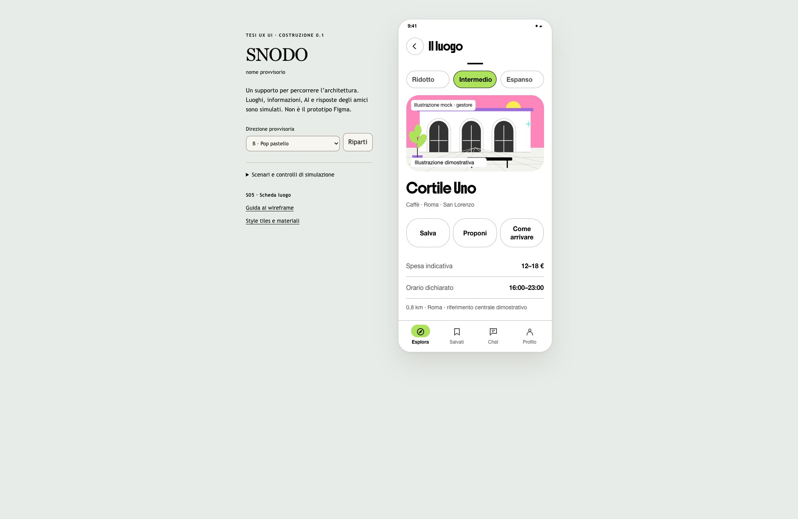

AANT · DESIGN DELLA COMUNICAZIONE
La tesi di SNODO.
Leggi la tesi e prova come funziona il progetto.
SUPPORTO INTERATTIVO
Prova SNODO.
Scegli un luogo, da solo o con gli amici.
Esplora la ricerca, la scelta in gruppo e la recensione guidata, con l’aiuto dell’assistente.
Apri la demoLuoghi, assistente e risposte degli amici sono simulati.
